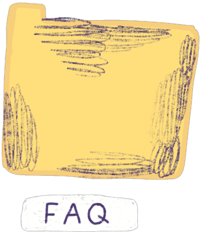
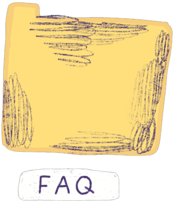

Decidi criar um blogue.
Um blogue que fosse, tipo, um diário, mas aberto para o mundo inteiro.
Sem aquela coisa pirosa do papel que cheira bem e da caneta especial.
O digital é o autêntico:
WHAT YOU GET IS WHAT YOU SEE.
Vai chamar-se ciclone.blogspot.com
BERNARDO
 
